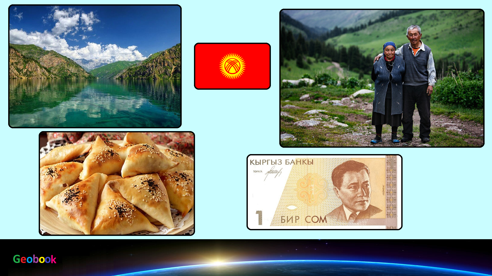

____
Климат
Континентальный, сухой. Ввиду сильной пересеченности рельефа на территории Киргизстана климатические условия довольно неоднородны - в высокогорных районах Тянь-Шаня погода имеет все признаки субполярного климата, в юго-западных областях (Ферганская долина) - субтропического, а в северных предгорьях климат почти умеренный. Характерной чертой является сухость воздуха над всей территорией страны, благодаря чему здесь в среднем 247 солнечных дней в году.
Среднеянварская температура колеблется от -1 С до -8 C в долинах, и до -18-27 C в высокогорьях. Наиболее холодный месяц - январь, когда из сибирского региона, Монголии и Казахстана приходят холодные воздушные массы, чье влияние усугубляется стоковыми ветрами с окрестных гор. Летом (июль) в долинах от +15 С до +27 С, в предгорьях от +10 С до +24 С, а в высокогорных районах до +5-11 C. Причем, в отличие от зимнего периода, жаркие воздушные массы с территории северо-западных и западных регионов Средней Азии почти не проникают в межгорные котловины Киргизстана. Однако южные склоны нагреваются довольно сильно. Температура воздуха на побережье Иссык-Куля менее контрастна и круглый год умерена (зимой около +2 С, летом - +18-22 С).
Годовое количество осадков колеблется от 180 мм на востоке страны до 600 мм в юго-западных регионах. Максимальное количество осадков выпадает в начале лета и в осенне-зимний период. Причем к середине зимы толщина снежного покрова на западных склонах гор может доходить до 1 метра, а в высокогорьях снег лежит круглый год.
____
